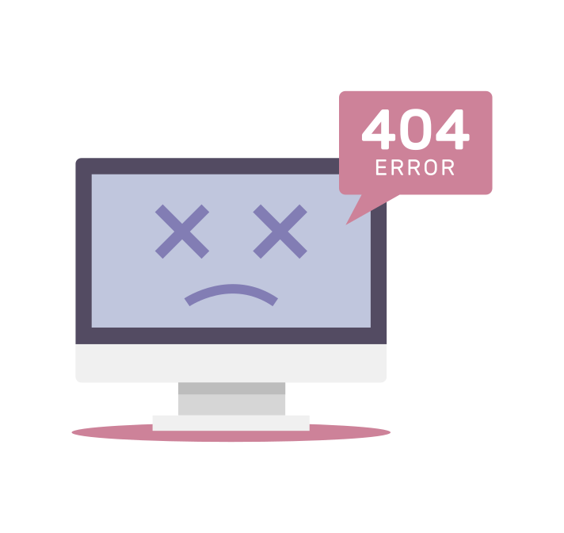

<div id="contenidoPagina">
    <header id="login">
      <span></span>
    </header>
    <main>
        <section class="notfound">
            <article>
                
                <h1>Página no encontrada</h1>
                <!-- Boton para volver a la pagina anterior -->
                <a href="javascript:history.back()" class="btn btn-primary">
                    <button title="Volver a la página anterior">
                        Volver
                    </button>
                </a>
            </article>
        </section>
    </main>
    <footer>
    <p>&copy; Copyright 2022 - Clinica de Nutrición</p>
    </footer>
</div>